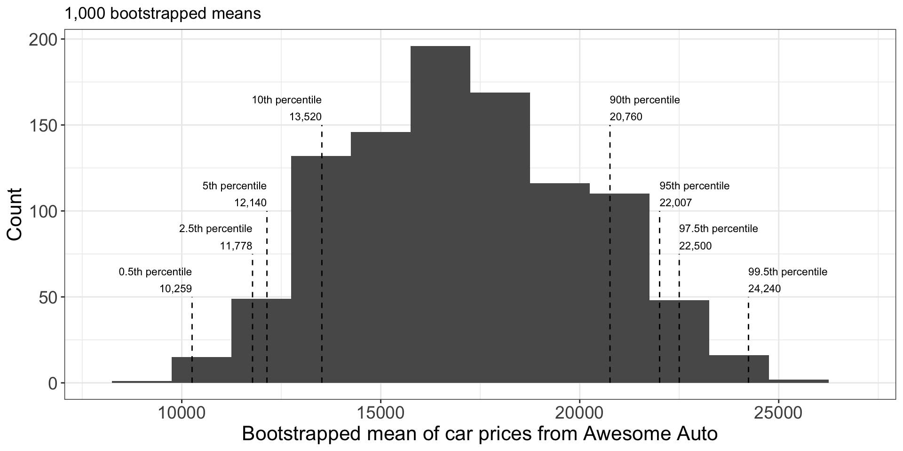
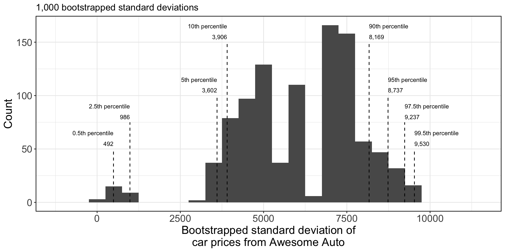
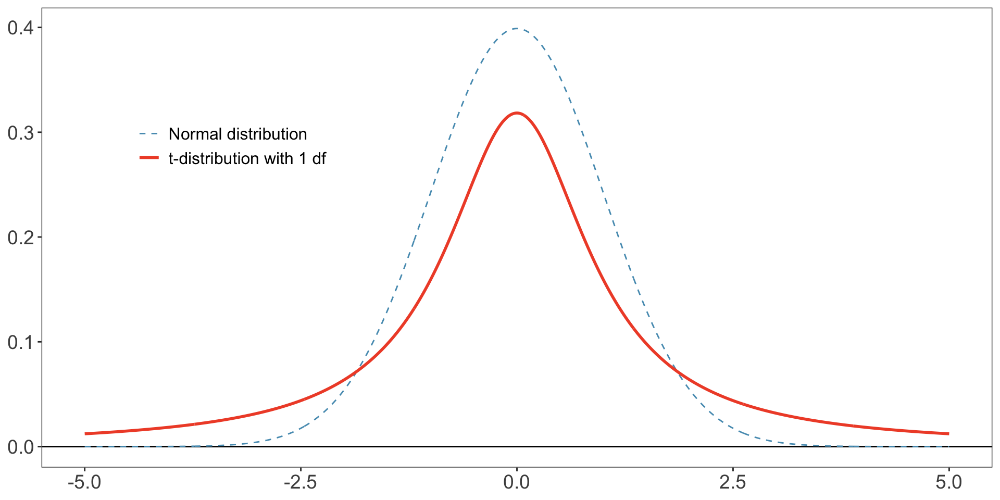
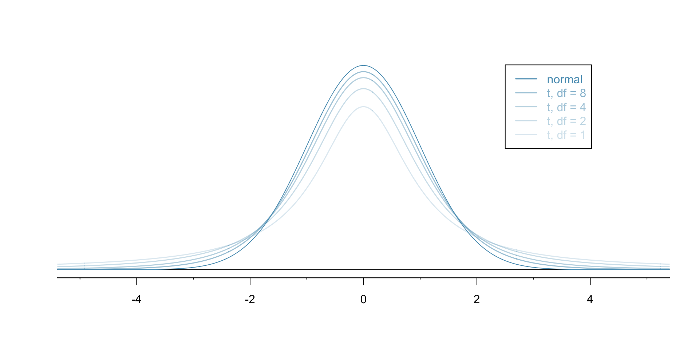
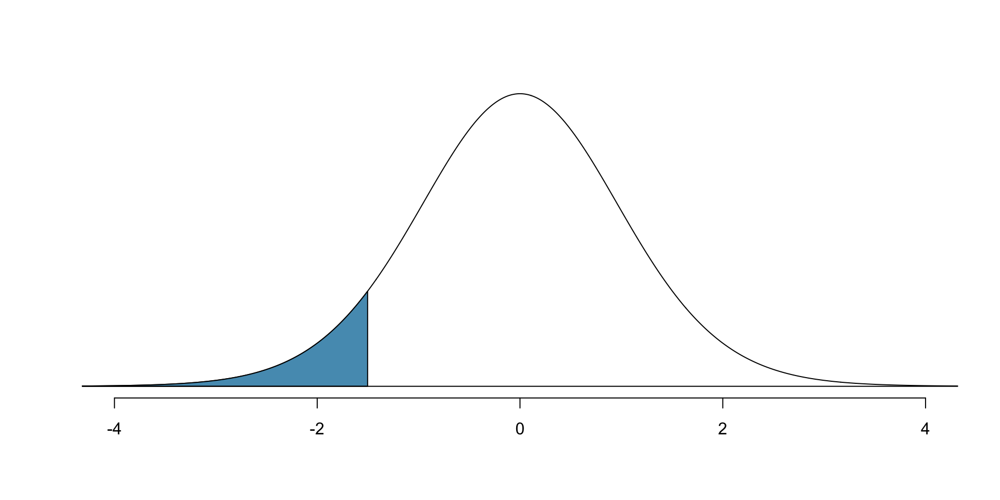
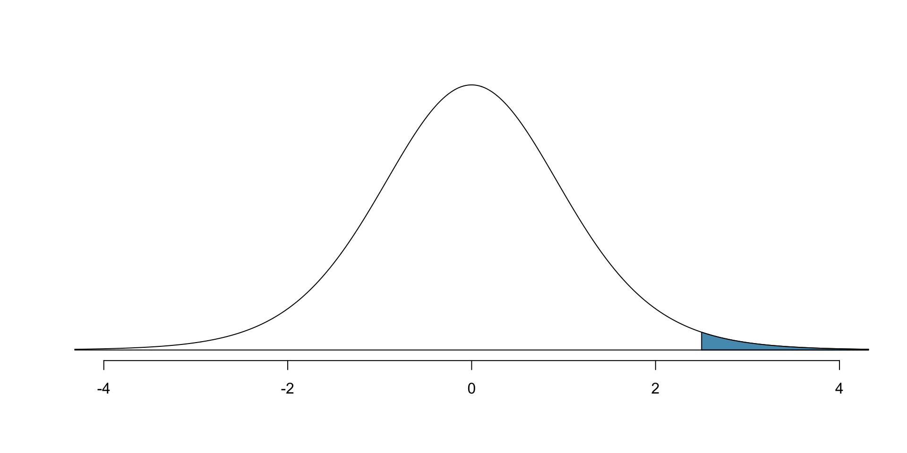
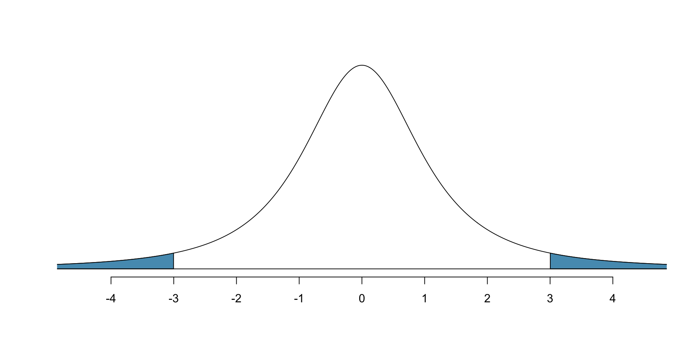
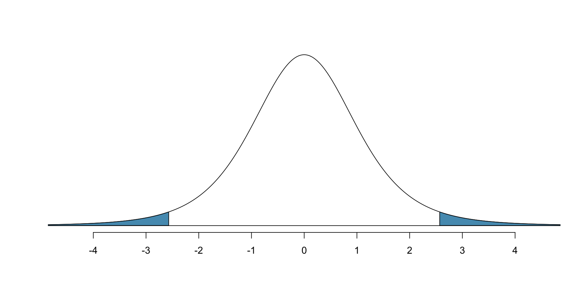

We want to know the average price of cars on a lot by taking a random sample
Our sample has five cars with prices 18,300; 20,100; 9,600; 10,700; 27,000
Sample mean: 17,140
How much can we expect the sample mean to change from sample to sample?
…vs proportion
Previously, we used the Central Limit Theorem to show that the variability of a sample proportion is well-described by normal distribution.
For proportions, the single parameter \(p\in [0,1]\) determines the mean \(p\) and the variance \(p(1-p)\) (and thus s.d. \(\sqrt{p(1-p)}\)).
Thus the only source of uncertainty is in measuring \(p\).
This slide deck will deal more generally with numerical variables.
For numerical variables, there are two sources of uncertainty:
The average/mean \(\mu\) — a “typical” value.
The standard deviation \(\sigma\) — typical variability in the parameter.
Thus we may be interested in estimating both.
For both, we will employ bootstrap CI and mathematical models.
Bootstrap CI for a mean
If we can sample more from the population, we can repeatedly:
sample five cars from the population, then
compute the sample mean of the five cars.
This gives a distribution of the sample mean of random samples of size 5, giving us sample-to-sample variability.
If we cannot sample more from the population, we can estimate this sample-to-sample variability by bootstrapping: take \(B\) bootstrap samples of size \(n\) from the original sample of size \(n\).
Each bootstrap sample has its own sample mean.
There is variability across these sample means.
This “bootstrap” variability can be an estimate for the variability of the sample mean induced by sampling repeatedly from the population.
Figure 1: Cartoon illustrating using the bootstrap procedure to estimate the distribution of the sample mean of random samples of size 5.
Suppose we took 1,000 bootstrap samples, and for each bootstrap sample we compute its sample mean.

Figure 2: Histogram of 1,000 bootstrapped means from the original sample of 5 car prices.
To develop bootstrap CI for the population mean at e.g. 90% confidence level, we can calculate the 5% and 95% percentile of the bootstrapped statistics.
Let’s build a function which does the following:
takes in a sample (a vector of numerics), and then computes a desired number of bootstrap samples and returns the means for each bootstrap sample.
We can construct a confidence interval for \(\sigma\) using bootstrapping.
Same idea to construct a confidence interval for population variance\(\sigma^2\):
Take bootstrap re-samples of dataset
Compute sample variance \(s^2\) for each bootstrap sample
Create histogram of sample variances across each bootstrap sample
Use the percentiles of the histogram to get confidence intervals
Confidence interval for population standard deviation\(\sigma\):
Create histogram of sample standard deviation \(s = \sqrt{s^2}\).
Bootstrap CI for a standard deviation: car
Results of bootstrap standard deviations:

Figure 3: Histogram of 1,000 bootstrapped standard deviations from the original sample of 5 car prices.
Very high variability. This is due to the tiny sample size - only 5 observations.
As we increase the original dataset sample size, the bootstrap improves.
A precise characterization of how sample size / number bootstrap trials affect the accuracy of the bootstrap is beyond this course. (It is still the subject of current research.)
Mathematical model for a mean
Central Limit Theorem for the sample proportion:
If [conditions], then the sampling distribution of \(\hat p\) is \[\approx N\Big(p,\; p(1-p)\Big).\]
Only one source of uncertainty: \(p\).
Central Limit Theorem for the sample mean:
If sufficiently large number of \(n\) independent samples \(x_1, x_2, \ldots, x_n\) from a population with mean \(\mu\) and standard deviation \(\sigma\), then the sampling distribution of \(\bar x_n\) is \[\approx N\Big(\mu,\; \frac{\sigma^2}{n}\Big).\]
Two sources of uncertainty: \(\mu\) and \(\sigma\).
Generally do not know population-level \(\sigma\), so we have to estimate it.
When you have to estimate \(\sigma\), the sampling distribution of \(\bar x_n\) is not approximately normal, but is what’s called a “t distribution”
\(t\) distribution
The \(t\) distribution is defined in terms of degrees of freedomdf.
Has a similar bell-shaped curve to normal, but has “thicker tails”, which allows for more extreme events to occur than in a normal distribution.

Figure 4: Probability density curve for standard normal distribution and for \(t\) distribution with 1 df.
Data from a normal distribution has very little data beyond 2.5;
Data from a \(t\) distribution has relatively more, particularly when df is small.
Effect of df on \(t\) distribution:
Given data with \(n\) samples, we will typically use \(t\) distribution with \(n-1\) df.
Few samples: more uncertainty when estimating population’s variance.
Many samples: less uncertainty when estimating population’s variance.
As df increases, the \(t\) distribution gets thinner tails and increasingly resembles a standard normal.

Figure 5: Probability density curve for standard normal distribution and for \(t\) distribution with various df.
When df \(>30\), almost indistinguishable from standard normal.
Intuition: height/thickness represents how likely values are; when df (\(n-1\)) is small, we are more uncertain and so more extreme values are more likely.
\(t\) distribution: how to calculate
Recall in R, to calculate probabilities under normal,
pnorm(val, mean, sd) to calculate probability that \(N(\mu, \sigma)\) is \(<= \text{val}\)
qnorm(quantile, mean, sd) to calculate value corresponding to quantile
Similarly, for t-distribution, we use
pt(val, df) to calculate probability that \(t\) distribution with df degrees of freedom is \(<= \text{val}\)
qt(quantile, df) to calculate value corresponding to quantile for \(t\) distribution with df degrees of freedom
Probability that \(t\) distribution with 20 degrees of freedom is less than -1.5?
# use pt() to find probability # under the $t$-distributionpt(-1.5, df =20)
[1] 0.07461789

Figure 6: Area under the density curve of a t distribution with 20 degrees of freedom for values less than -1.5.
Probability that \(t\) distribution with 11 degrees of freedom is bigger than 2.5?
1-pt(2.5, df =11)
[1] 0.01475319

Area under the density curve of a t distribution with 11 degrees of freedom for values larger than 2.5.
\(t\) distribution: example calculations II
Probability that \(t\) distr. with 2 df is more than 3 units away from the mean?
# use pt() to find probability under the $t$-distributionpt(-3, df =2) + (1-pt(3, df =2))
[1] 0.09546597

Figure 7: Area under the density curve of a t distribution with 2 degrees of freedom for values smaller than -3 or larger than 3.
Any \(t\) distribution is symmetric around 0, so…
2*pt(-3, df =2) # ...could also do this
[1] 0.09546597
Compare with what happens with standard normal: 68-95-99.7 rule says that only 0.3% (=0.003) would be more than 3 units from the mean.
Since \(t\) distribution has fatter tails, it assigns greater probability to extreme values, so we get significantly more area for \(t\) distribution.
As degrees of freedom increase, this becomes less and less the case.
One-sample \(t\)-distribution CI: conditions
Previously: if we have independent samples and sufficiently large dataset where population has mean \(\mu\) and s.d. \(\sigma\), then \(\bar x_n\) is approximately normal, with mean \(\mu\) and s.d. \(\sigma/\sqrt n\).
However, we don’t know \(\sigma\), and if we want to use the sample estimate \(s\) for \(\sigma\) then we can’t say that \(\bar x_n\) is approximately normal, but will instead be \(t\) distribution with \(n-1\) df under certain conditions
Conditions needed:
Independent sample observations (satisfied w/ random sample)
Normality of samples - each \(x_i\) is from a normal distribution (or approximately). How to check?
If \(n<30\) and no clear outliers, then OK.
If \(n\geq 30\) and no particularly extreme outliers, then OK
If these assumptions hold, then the confidence interval for the mean is
\[\text{point estimate} \pm t_{df}^* \times SE\]
Here, the point estimate is \(\bar{x}\), and the SE is \(s/\sqrt{n}\).
Critical value \(t^*_{df}\) found same way as for \(z^*\) (next slide)
One-sample \(t\)-distribution CI: calculation
Same idea holds for finding \(t^*_{df}\): to get confidence level of \(1-\alpha\), we use
qt(1 - alpha/2, df = df)
E.g. if df = 5 and we want 95% confidence level,
qt(1-0.05/2, df =5)
[1] 2.570582

The tails of this distribution are heavier than the tails of a standard normal distribution.
E.g. if df = 10 and we want 95% confidence level,
qt(1-0.05/2, df =10)
[1] 2.228139
E.g. if df = 50 and we want 95% confidence level,
qt(1-0.05/2, df =50)
[1] 2.008559
E.g. if df = 500 and we want 95% confidence level,
qt(1-0.05/2, df =500)
[1] 1.96472
E.g. if df = 5000 and we want 95% confidence level,
qt(1-0.05/2, df =5000)
[1] 1.960439
As df increases, the t-distribution’s critical value seems to be approaching
qnorm(1-0.05/2)
[1] 1.959964
One-sample \(t\)-distribution CI: mercury in tuna
High mercury concentrations can be dangerous for tuna and humans that eat them.
Let’s consider problem of measuring the amount of mercury in tuna.
Suppose we have a random sample of 19 tunas, with the following summary statistics (measurements in micrograms mercury / gram tuna).
Table 1
n
Mean
SD
Min
Max
19
4.4
2.3
1.7
9.2
Are conditions for applying \(t\) distribution satisfied?
Independent since random sample
\(n<30\) and summary stats suggest no clear outliers.
Let’s calculate 95% confidence interval
Calculate standard error: \[ SE = \frac{s}{\sqrt n} = \frac{2.3}{\sqrt{19}} = 0.528\]
Since df is \(n-1=19-1\), calculate \(t^*_{19-1}\) for \(1-0.05\) confidence level: